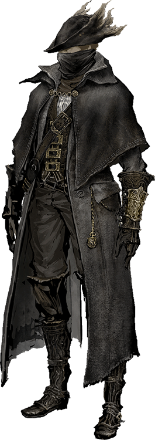
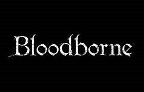
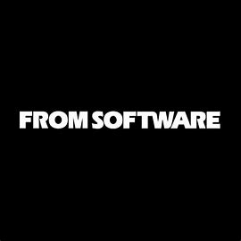

Boas vindas ao Sonho do Caçador
Saudações, Caçadores e Caçadoras, sejam bem vindos ao Sonho do Caçador, o local que vai te ensinar de forma clara e direta todas as informações básicas e necessárias do jogo Bloodborne. Aqui você terá acesso à muito conteúdo, como a história de Hidetaka Miyazaki, o criador de Bloodborne, a explicação e teorias sobre o enredo do game, história dos personagens, artes conceituais, entre outras coisas.
Mas você sabe o que é Bloodborne, afinal? Se você não sabe, acompanhe-nos e mostraremos o, horrivelmente belo, mundo de Bloodborne.
Passando-se em um mundo deturpado e pertubardor fortemente influenciado pelas obras do grande autor e mestre do terror cósmico, H.P Lovecraft, Bloodborne é um RGP de ação e terror com pitadas de hack n' slash e muito conhecido por sua dificuldade extrema. Sua ideia foi concebida por Hidetaka Miyazaki, sendo desenvolvido pela empresa FromSoftware e lançado no dia 6 de Fevereiro de 2015 exclusivamente para o console Playstation 4. Seu tipo de gameplay se encaixa em um gênero que passou a ser conhecido como Soulslike nos últimos anos. O gênero ganhou fama por suas mecânicas complexas de dificuldade e sua filosofia de que, quanto maior o desafio, maior a recompensa.
 
A sinopse do jogo diz o seguinte: "Enfrente seus desafio enquanto busca respostas na antiga cidade de Yharnam, agora afetada com uma estranha doença endêmica que se espalha pelas ruas como fogo. Perigo e loucura estão em cada canto deste estranho mundo, e você deve descobrir seus segredos mais sombrios para sobreviver. Persiga seus pesadelos."
O jogo teve em média 9.7 nas reviews mundiais e vendeu mais de 1 milhão de cópias no mundo inteiro, sendo considerado por alguns como um dos melhores jogos já feitos e ganhando espaço na linha de frente de jogos exclusivos de Playstation 4, e assim se tornando um novo clássico da industria de jogos.